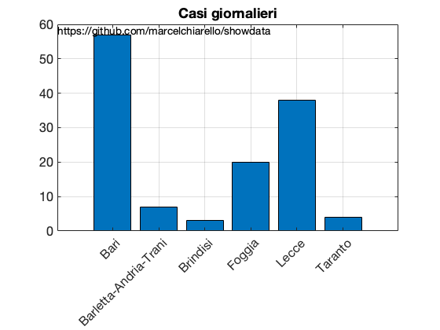
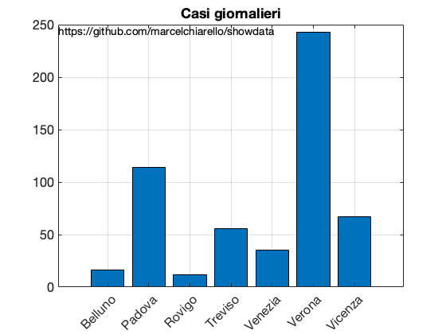
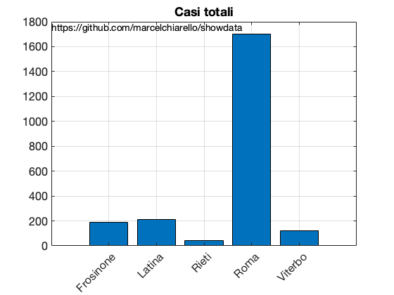

COVID19 DATI PROVINCE E REGIONI AGGIORNATE AL 27 MARZO 2020.
Questo report è relativo all' elaborazione dei dati sulla diffusione del COVID-19 in Italia e nelle singole regioni/province. I dati sono forniti dalla protezione civile Italiana, consultabili al segunte link:
"https://github.com/pcm-dpc/COVID-19"
Source: https://github.com/marcelchiarello/showdata
Site: https://marcelchiarello.github.io/showdata
Author: Marcello Chiarello
marcello.chiarello@outlook.com
Contents
DATI PUGLIA
RUN DATA: 27-Mar-2020
Tabella casi giornalieri per la regione Puglia
TABLE =
6×3 table
province casiGiornalieri casiTotali
_______________________ _______________ __________
"Bari" 57 444
"Barletta-Andria-Trani" 7 92
"Brindisi" 3 125
"Foggia" 20 325
"Lecce" 38 215
"Taranto" 4 78
"Casi giornalieri totali:" "129"
"Casi regione totali:" "1279"
fonte: elaborazione dei dati della protezione civile
 
DATI LOMBARDIA
RUN DATA: 27-Mar-2020
Tabella casi giornalieri per la regione Lombardia
TABLE =
12×3 table
province casiGiornalieri casiTotali
_______________________ _______________ __________
"Bergamo" 602 8060
"Brescia" 374 7305
"Como" 54 816
"Cremona" 126 3496
"Lecco" 51 1210
"Lodi" 38 2006
"Mantova" 148 1398
"Milano" 547 7469
"Monza e della Brianza" 198 1948
"Pavia" 27 1712
"Sondrio" 37 362
"Varese" 209 711
"Casi giornalieri totali:" "2411"
"Casi regione totali:" "36493"
fonte: elaborazione dei dati della protezione civile
DATI VENETO
RUN DATA: 27-Mar-2020
Tabella casi giornalieri per la regione Veneto
TABLE =
7×3 table
province casiGiornalieri casiTotali
_________ _______________ __________
"Belluno" 16 329
"Padova" 114 1891
"Rovigo" 12 122
"Treviso" 56 1310
"Venezia" 35 955
"Verona" 243 1645
"Vicenza" 67 966
"Casi giornalieri totali:" "543"
"Casi regione totali:" "7218"
fonte: elaborazione dei dati della protezione civile
 DATI PIEMONTE
RUN DATA: 27-Mar-2020
Tabella casi giornalieri per la regione Piemonte
TABLE =
8×3 table
province casiGiornalieri casiTotali
______________________ _______________ __________
"Alessandria" 126 1106
"Asti" 21 303
"Biella" 31 367
"Cuneo" 31 518
"Novara" 32 609
"Torino" 253 3361
"Verbano-Cusio-Ossola" 33 288
"Vercelli" 22 358
"Casi giornalieri totali:" "549"
"Casi regione totali:" "6910"
fonte: elaborazione dei dati della protezione civile
DATI EMILIA ROMAGNA
RUN DATA: 27-Mar-2020
Tabella casi giornalieri per la regione Emilia Romagna
TABLE =
9×3 table
province casiGiornalieri casiTotali
____________________ _______________ __________
"Bologna" 160 1413
"Ferrara" 32 244
"Forlì-Cesena" 67 580
"Modena" 96 1772
"Parma" 79 1690
"Piacenza" 63 2276
"Ravenna" 37 488
"Reggio nell'Emilia" 163 1861
"Rimini" 75 1264
"Casi giornalieri totali:" "772"
"Casi regione totali:" "11588"
fonte: elaborazione dei dati della protezione civile
DATI CAMPANIA
RUN DATA: 27-Mar-2020
Tabella casi giornalieri per la regione Campania
TABLE =
5×3 table
province casiGiornalieri casiTotali
___________ _______________ __________
"Avellino" 2 182
"Benevento" 1 15
"Caserta" 2 179
"Napoli" 69 734
"Salerno" 0 244
"Casi giornalieri totali:" "74"
"Casi regione totali:" "1354"
fonte: elaborazione dei dati della protezione civile
DATI SICILIA
RUN DATA: 27-Mar-2020
Tabella casi giornalieri per la regione Sicilia
TABLE =
9×3 table
province casiGiornalieri casiTotali
_______________ _______________ __________
"Agrigento" 3 58
"Caltanissetta" 5 55
"Catania" 19 365
"Enna" 22 155
"Messina" 6 227
"Palermo" 13 218
"Ragusa" 4 32
"Siracusa" 2 79
"Trapani" 12 61
"Casi giornalieri totali:" "86"
"Casi regione totali:" "1250"
fonte: elaborazione dei dati della protezione civile
DATI ABRUZZO
RUN DATA: 27-Mar-2020
Tabella casi giornalieri per la regione Abruzzo
TABLE =
4×3 table
province casiGiornalieri casiTotali
__________ _______________ __________
"Chieti" 14 189
"L'Aquila" 11 75
"Pescara" 31 476
"Teramo" 15 277
"Casi giornalieri totali:" "71"
"Casi regione totali:" "1017"
fonte: elaborazione dei dati della protezione civile
DATI BASILICATA
RUN DATA: 27-Mar-2020
Tabella casi giornalieri per la regione Basilicata
TABLE =
2×3 table
province casiGiornalieri casiTotali
_________ _______________ __________
"Matera" 5 53
"Potenza" 12 98
"Casi giornalieri totali:" "17"
"Casi regione totali:" "151"
fonte: elaborazione dei dati della protezione civile
DATI CALABRIA
RUN DATA: 27-Mar-2020
Tabella casi giornalieri per la regione Calabria
TABLE =
5×3 table
province casiGiornalieri casiTotali
____________________ _______________ __________
"Catanzaro" 62 115
"Cosenza" 21 128
"Crotone" 0 80
"Reggio di Calabria" 17 140
"Vibo Valentia" 1 29
"Casi giornalieri totali:" "101"
"Casi regione totali:" "492"
fonte: elaborazione dei dati della protezione civile
DATI CAMPANIA
RUN DATA: 27-Mar-2020
Tabella casi giornalieri per la regione Campania
TABLE =
5×3 table
province casiGiornalieri casiTotali
___________ _______________ __________
"Avellino" 2 182
"Benevento" 1 15
"Caserta" 2 179
"Napoli" 69 734
"Salerno" 0 244
"Casi giornalieri totali:" "74"
"Casi regione totali:" "1354"
fonte: elaborazione dei dati della protezione civile
DATI VENEZIA GIULIA
RUN DATA: 27-Mar-2020
Tabella casi giornalieri per la regione Friuli Venezia Giulia
TABLE =
4×3 table
province casiGiornalieri casiTotali
___________ _______________ __________
"Gorizia" 4 79
"Pordenone" 37 332
"Trieste" 26 411
"Udine" 27 487
"Casi giornalieri totali:" "94"
"Casi regione totali:" "1309"
fonte: elaborazione dei dati della protezione civile
DATI LAZIO
RUN DATA: 27-Mar-2020
Tabella casi giornalieri per la regione Lazio
TABLE =
5×3 table
province casiGiornalieri casiTotali
___________ _______________ __________
"Frosinone" 35 191
"Latina" 6 212
"Rieti" 2 43
"Roma" 136 1703
"Viterbo" 2 124
"Casi giornalieri totali:" "181"
"Casi regione totali:" "2273"
fonte: elaborazione dei dati della protezione civile
 DATI LIGURIA
RUN DATA: 27-Mar-2020
Tabella casi giornalieri per la regione Liguria
TABLE =
4×3 table
province casiGiornalieri casiTotali
___________ _______________ __________
"Genova" 55 817
"Imperia" 3 214
"La Spezia" 64 213
"Savona" 14 223
"Casi giornalieri totali:" "136"
"Casi regione totali:" "1467"
fonte: elaborazione dei dati della protezione civile
DATI MARCHE
RUN DATA: 27-Mar-2020
Tabella casi giornalieri per la regione Marche
TABLE =
5×3 table
province casiGiornalieri casiTotali
_________________ _______________ __________
"Ancona" 36 905
"Ascoli Piceno" 7 118
"Fermo" 29 233
"Macerata" 6 411
"Pesaro e Urbino" 1 1475
"Casi giornalieri totali:" "79"
"Casi regione totali:" "3142"
fonte: elaborazione dei dati della protezione civile
DATI MOLISE
RUN DATA: 27-Mar-2020
Tabella casi giornalieri per la regione Molise
TABLE =
2×3 table
province casiGiornalieri casiTotali
____________ _______________ __________
"Campobasso" 6 91
"Isernia" 0 9
"Casi giornalieri totali:" "6"
"Casi regione totali:" "100"
fonte: elaborazione dei dati della protezione civile

DATI P.A. Bolzano
RUN DATA: 27-Mar-2020
Tabella casi giornalieri per la regione P.A. Bolzano
TABLE =
1×3 table
province casiGiornalieri casiTotali
_________ _______________ __________
"Bolzano" 97 1003
"Casi giornalieri totali:" "97"
"Casi regione totali:" "1003"
fonte: elaborazione dei dati della protezione civile
DATI P.A. Trento
RUN DATA: 27-Mar-2020
Tabella casi giornalieri per la regione P.A. Trento
TABLE =
1×3 table
province casiGiornalieri casiTotali
________ _______________ __________
"Trento" 94 1391
"Casi giornalieri totali:" "94"
"Casi regione totali:" "1391"
fonte: elaborazione dei dati della protezione civile
DATI SARDEGNA
RUN DATA: 27-Mar-2020
Tabella casi giornalieri per la regione Sardegna
TABLE =
5×3 table
province casiGiornalieri casiTotali
______________ _______________ __________
"Cagliari" 0 83
"Nuoro" 0 52
"Oristano" 2 9
"Sassari" 5 336
"Sud Sardegna" 29 50
"Casi giornalieri totali:" "36"
"Casi regione totali:" "530"
fonte: elaborazione dei dati della protezione civile
DATI TOSCANA
RUN DATA: 27-Mar-2020
Tabella casi giornalieri per la regione Toscana
TABLE =
10×3 table
province casiGiornalieri casiTotali
_______________ _______________ __________
"Arezzo" 0 249
"Firenze" 0 764
"Grosseto" 0 174
"Livorno" 0 204
"Lucca" 0 481
"Massa Carrara" 0 334
"Pisa" 0 350
"Pistoia" 0 264
"Prato" 0 189
"Siena" 0 216
"Casi giornalieri totali:" "0"
"Casi regione totali:" "3225"
fonte: elaborazione dei dati della protezione civile
DATI UMBRIA
RUN DATA: 27-Mar-2020
Tabella casi giornalieri per la regione Umbria
TABLE =
2×3 table
province casiGiornalieri casiTotali
_________ _______________ __________
"Perugia" 58 658
"Terni" 17 195
"Casi giornalieri totali:" "75"
"Casi regione totali:" "853"
fonte: elaborazione dei dati della protezione civile
DATI VALLE D' AOSTA
RUN DATA: 27-Mar-2020
"Tabella casi giornalieri per la regione " "Valle d'Aosta"
TABLE =
1×3 table
province casiGiornalieri casiTotali
________ _______________ __________
"Aosta" 44 452
"Casi giornalieri totali:" "44"
"Casi regione totali:" "452"
fonte: elaborazione dei dati della protezione civile